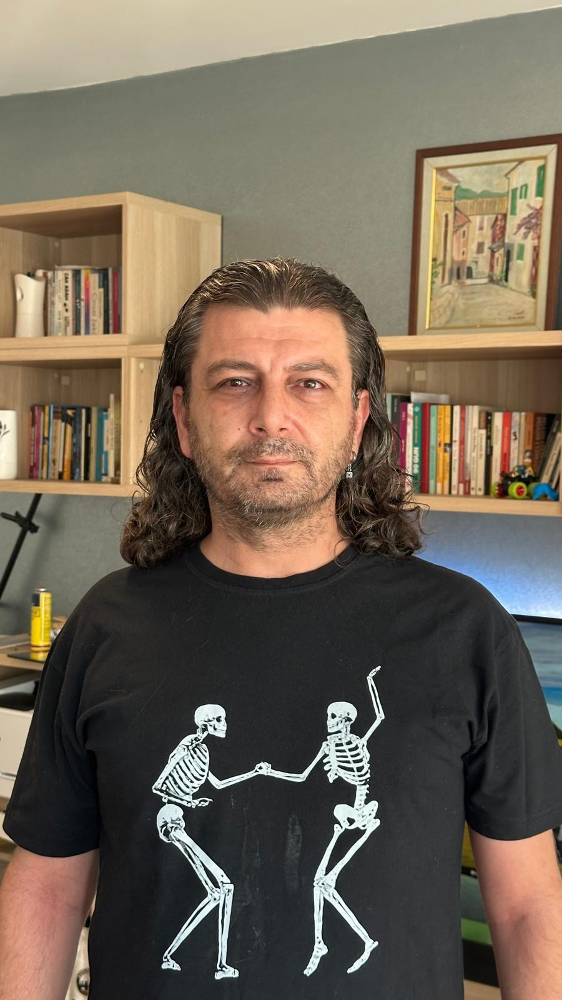
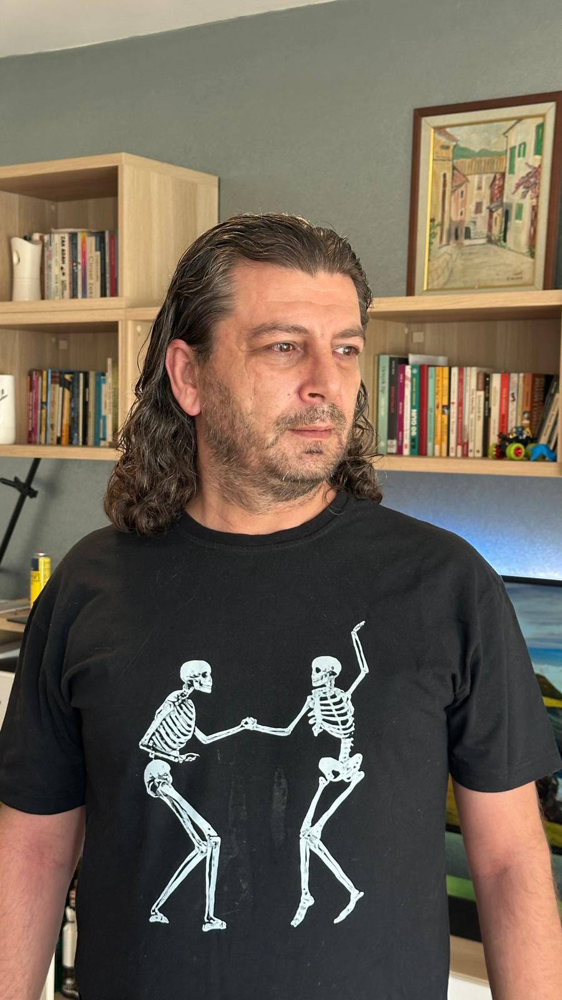

ALTUĞ ERBAŞI / SANATÇI
Hayattan
şarkılara.
Bazen bir cümle, bazen bir sessizlik.
Yaşadıklarımın müziğe dönüşen hâli.
BİR HAYAT. BİRÇOK HİKÂYE. AYNI SES.

01 / MÜZİK
Her şarkı, bir iz.
Biraz kendimden.
Belki biraz da senden.
02 / OYUNCULUK
Bu kez, sahnede.
Başka bir karakter.
Yeni bir hikâye.
Bugün Git Yarın Gel
TİYATRO KILÇIK 2026
Hayatımda amatör oyunculuğun da bir yeri var. 2026 yılında Tiyatro Kılçık bünyesinde “Bugün Git Yarın Gel” adlı oyunda sahne aldım. O deneyimden bir kesiti burada paylaşıyorum.

HAYATIN İÇİNDEN, OLDUĞU GİBİ.03 / HİKÂYEM
Bir meslekten
daha fazlası.
Teknolojiyle düşünen.
İnsanı dinleyen. Kelimelerle yaşayan.
Ben Altuğ Erbaşı. Bir IT uzmanı, yaşam koçu, yazar, şair ve amatör oyuncuyum. Hayata farklı pencerelerden bakıyorum; yaşadıklarım ve deneyimlerim, yazdıklarıma ve şarkılarıma dönüşüyor.
Müzik, bu yolculuğun sesi. Bazen söyleyemediklerimi, bazen içimde kalanları, bazen de bir ihtimali taşıyor. Bu sayfada o yolculuktan parçalar var.
04 / İLETİŞİM
Bir şarkıda buluştuysak,
bir merhaba da yeter.
Düşüncelerin, müzik ve tiyatro üzerine sohbetler ve iş birlikleri için.
altuglove@gmail.com